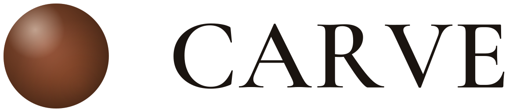

01 · 2 minutes
Connect once. Start with a real read of the store.
Carve maps the catalog, how shoppers find you and what happens on the product page. The first output isn’t copy — it’s an evidence-backed overview of the business it’s about to work for.

Northline Supply / First readOverview ready
ShopifyProducts, variants, fields
✓
Search ConsoleQueries, clicks, landing pages
✓
Google AnalyticsBehavior, conversion, revenue
✓Source map completeCatalog, demand and performance now resolve to the same products.
Carve’s overview
Northline Supply
842 products across 18 outdoor brands, read with 90 days of connected performance.
Products842
Impressions4.96M+12.6%
Organic clicks178.6K+9.8%
Product revenue$1.08M+14.1%